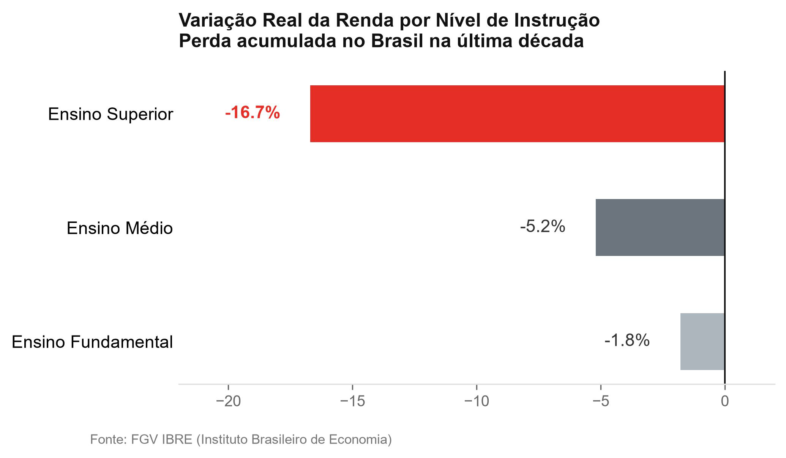
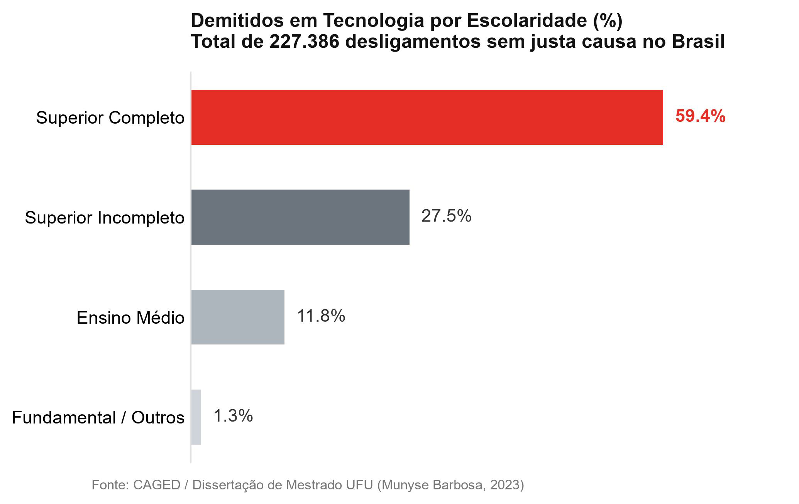
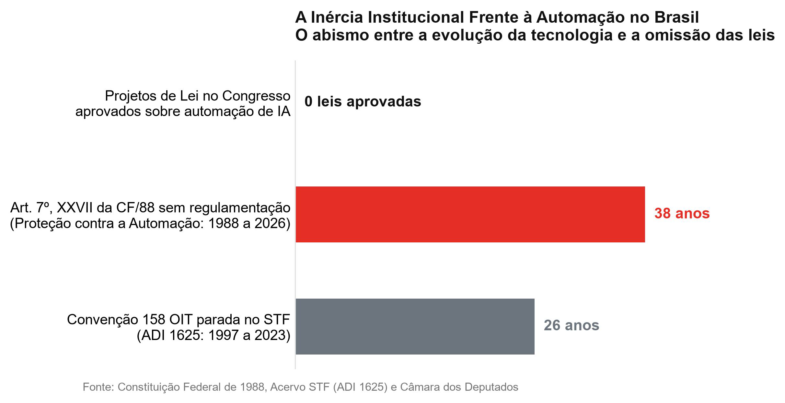
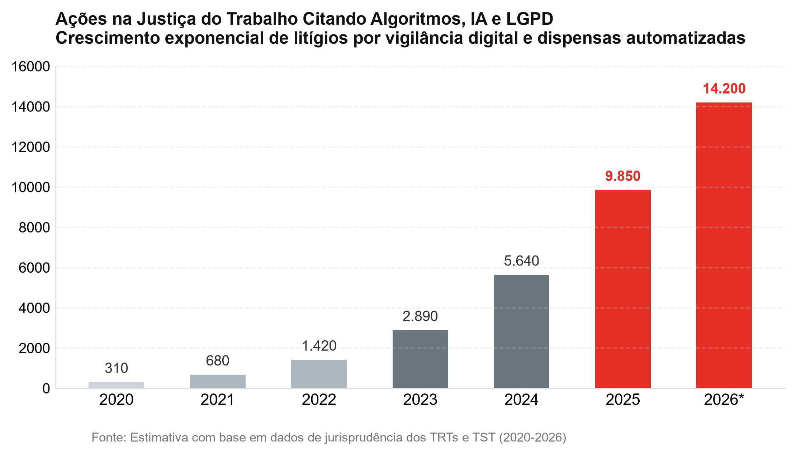
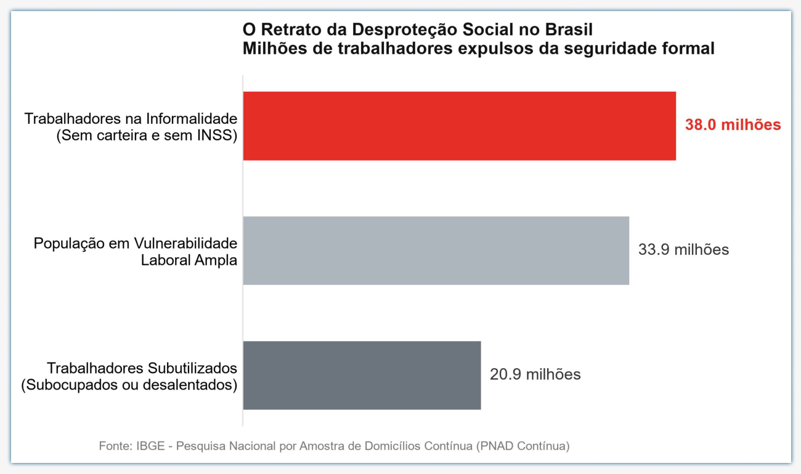
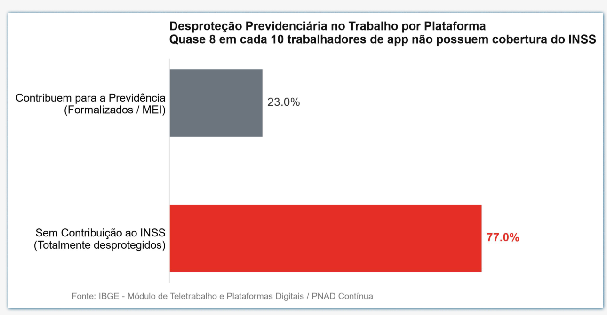
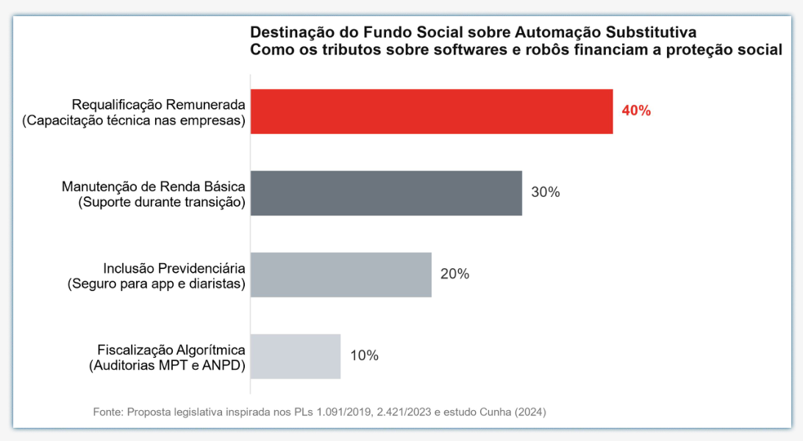
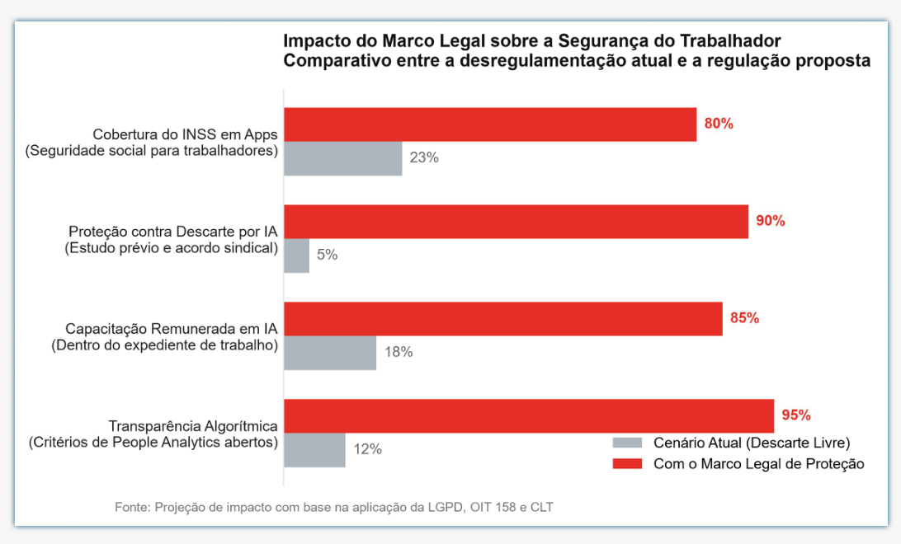

Trabalho descartável:
Código Vermelho
Sumário
Edito
rial
Nenhuma linha de programação nasce sozinha: por trás de cada resposta automática da Inteligência Artificial, pulsa o trabalho humano invisível de milhões de profissionais que o mercado agora tenta descartar. A primeira edição da revista Código Vermelho nasce para desmontar a maior mentira empresarial do nosso tempo — a ideia de que os softwares atuais funcionam como cérebros eletrônicos independentes. Como explica o filósofo italiano Matteo Pasquinelli, a Inteligência Artificial nada mais é do que trabalho cristalizado: programas que absorveram, sem pagar um centavo, décadas de textos, códigos e conhecimentos práticos criados por trabalhadores reais para, logo depois, serem usados pelas corporações para cortar vagas e reduzir salários dessas mesmas categorias. No Brasil e no mundo, esse uso predatório da tecnologia destrói a empregabilidade não por um avanço inevitável da ciência, mas pela soma de duas falhas estruturais graves: a incoerência das leis e dos tribunais brasileiros, que não cumprem a promessa constitucional de proteger o trabalhador contra a automação, e a lógica capitalista de redução de custos, que expulsa profissionais qualificados do emprego formal para empurrá-los ao subemprego precarizado. Desmascarar essa engrenagem e apontar a quais direitos a classe trabalhadora pode recorrer é o passo urgente para impedir que o progresso técnico se consolide como sentença de exclusão social.
Em primeiro plano, é preciso compreender que as ondas de demissões justificadas pelo uso de IA ocorrem porque o sistema econômico prioriza o corte imediato da folha salarial diante de um Estado que se recusa a aplicar a própria lei. Os economistas Daron Acemoglu e Pascual Restrepo demonstram que o mercado atual investe em uma automação substitutiva: em vez de usar a máquina para apoiar o ser humano e criar novas funções, os executivos trocam equipes inteiras por softwares apenas para eliminar salários, férias e impostos trabalhistas. Foi sob essa lógica que Sebastian Siemiatkowski, presidente da financeira sueca Klarna, substituiu o trabalho de 700 profissionais de atendimento e marketing por um assistente virtual, e que Mark Zuckerberg iniciou, em 20 de maio de 2026, o corte de 10% da força de trabalho global da Meta — cerca de 8 mil funcionários — sob o argumento direto de automação. No Brasil, onde empresas financeiras e de tecnologia já utilizam agentes próprios de IA e painéis digitais para vigiar cliques, encolher equipes pela metade e demitir jovens programadores sob a desculpa falsa de "falta de adaptação", esse descarte é facilitado por uma dupla incoerência da Justiça e do Parlamento. Embora a Constituição Federal prometa literalmente, desde 1988, a "proteção em face da automação" (Artigo 7º, inciso XXVII) e a defesa contra a "despedida arbitrária" (inciso I), o Congresso Nacional nunca aprovou a lei que tira esse direito do papel. Pior ainda: ao julgar a Convenção nº 158 da Organização Internacional do Trabalho (OIT) — tratado que proíbe demissões sem motivo justo e exige a realocação de trabalhadores afetados pela tecnologia —, o Supremo Tribunal Federal (STF) admitiu que o governo agiu fora da regra ao cancelar esse pacto por decreto nos anos 1990, mas manteve o cancelamento válido para proteger o caixa das empresas. Mesmo diante dessa omissão do STF, que no Tema 638 obrigou as empresas a conversarem com os sindicatos antes de demissões em massa sem exigir que cheguem a um acordo, o trabalhador brasileiro não está totalmente indefeso. Quando desligado por metas de robôs ou cortes tecnológicos, o profissional pode acionar a Justiça do Trabalho com base no Artigo 20 da Lei Geral de Proteção de Dados (LGPD), que obriga a empresa a abrir os critérios do algoritmo e revisar decisões automatizadas; no Artigo 2º da CLT, que proíbe o patrão de jogar o risco do negócio e a falta de treinamento nas costas do empregado; e na Súmula 443 do TST, que pune dispensas discriminatórias disfarçadas de modernização.
Como consequência direta dessa falta de freios legais sobre o apetite empresarial, a substituição desenfreada de trabalhadores por sistemas de IA destrói a escada de ascensão profissional e fabrica uma massa de subempregados no país. Dados do Fórum Econômico Mundial apontam que quase metade (47%) de todas as tarefas humanas já passa pela automação, mas o impacto no Brasil desmonta o mito de que o estudo garante segurança: segundo registros oficiais do CAGED, de mais de 227 mil demitidos sem justa causa no setor de tecnologia, 59,4% possuíam ensino superior completo, enquanto pesquisas da FGV IBRE revelam que os profissionais mais escolarizados sofreram uma queda real de 16,7% na renda na última década. Para explicar o destino de quem é expulso do mercado formal — desde o desenvolvedor e o bancário até o atendente de telemarketing e o operador de caixa —, o sociólogo brasileiro Ricardo Antunes formula o conceito de uberização do trabalho e nova servidão digital. Sem reserva financeira para suportar longos períodos sem salário, o profissional demitido vai engrossar as estatísticas da PNAD Contínua do IBGE, que já registram 38 milhões de brasileiros na informalidade sem proteção previdenciária e 33,9 milhões em situação de vulnerabilidade laboral, incluindo 21 milhões de trabalhadores subutilizados. Consolida-se, assim, a mais perversa ironia do capitalismo contemporâneo: até mesmo quando empresas como a Klarna percebem que a IA sozinha derruba a qualidade do serviço, elas recontratam humanos sob regimes flexíveis de aplicativo; no Brasil, o trabalhador descartado por um algoritmo de gestão no escritório passa a rodar de 12 a 14 horas diárias nas ruas sob o comando de outro algoritmo no celular, ou a treinar robôs em casa ganhando centavos por tarefa, sem direito a férias, décimo terceiro salário ou aposentadoria.
Portanto, conter a destruição de empregos e o avanço do subemprego exige uma intervenção estatal firme que corrija o vazio constitucional e imponha limites sociais ao capital tecnológico. Para enfrentar a causa jurídico-econômica das demissões arbitrárias discutida no primeiro argumento, cabe ao Congresso Nacional, em articulação com o Ministério do Trabalho e Emprego (MTE), regulamentar imediatamente o Artigo 7º, incisos I e XXVII, da Constituição Federal e ratificar novamente a Convenção nº 158 da OIT, por meio da aprovação de um Marco Legal de Proteção contra a Automação Substitutiva (unificando projetos como o PL 1.091/2019 e o PL 2.421/2023). No detalhamento prático dessa medida, toda empresa que implementar sistemas de IA precisará apresentar um estudo prévio de impacto sobre o emprego, oferecer capacitação remunerada obrigatória durante o expediente e negociar acordos efetivos com os sindicatos, além de pagar uma Contribuição Social sobre Automação Substitutiva sempre que trocar postos humanos por softwares — revertendo esses recursos para um fundo público de manutenção de renda. Paralelamente, para combater a vigilância abusiva e a precarização do subemprego analisadas no segundo argumento, o Ministério Público do Trabalho (MPT) e a Autoridade Nacional de Proteção de Dados (ANPD) devem fiscalizar os painéis corporativos de monitoramento (People Analytics) e os aplicativos de plataforma, mediante auditorias algorítmicas obrigatórias baseadas no Artigo 20 da LGPD, punindo com multas pesadas e reintegração imediata as empresas que usarem metas de IA como pretexto para o descarte sem treinamento ou que negarem direitos previdenciários aos trabalhadores digitais. Enquanto o lucro dos algoritmos for privado e o descarte de quem construiu esse conhecimento continuar livre, nenhuma linha de programação será neutra — porque por trás de cada máquina existe o suor humano que a Constituição prometeu, e agora precisa, defender.
A ilusão da
mente eletrônica
Da máquina a vapor ao algoritmo: como a Quarta Revolução Industrial capturou o trabalho intelectual e transformou saberes coletivos em mercadoria privada.
Nas primeiras revoluções industriais, a máquina a vapor e as esteiras de montagem substituíram a força muscular dos animais e o esforço braçal dos operários da fábrica. Na virada do século XXI, o discurso corporativo sustentava uma promessa reconfortante: "estude, busque uma profissão intelectual e o avanço técnico jamais alcançará o seu sustento". Hoje, no entanto, como apontam as pesquisas acadêmicas sobre as transformações do trabalho na Revolução 4.0 (Estrada, 2022; Oliveira, 2025), a fronteira da automação rompeu essa barreira histórica. A Inteligência Artificial generativa não veio para carregar caixas ou apertar parafusos; ela invadiu os escritórios para capturar o raciocínio analítico, a redação técnica, a criação visual e a escrita de códigos de software.
Essa transição, contudo, oculta uma engrenagem perversa que o filósofo Matteo Pasquinelli define como a apropriação do trabalho cristalizado. Ao contrário do que a propaganda do Vale do Silício tenta vender, nenhum algoritmo cria conhecimento do zero. Os grandes modelos computacionais funcionam porque foram alimentados e treinados sobre oceanos de dados extraídos da internet sem consentimento ou remuneração: décadas de discussões em fóruns técnicos, artigos científicos, bibliotecas inteiras de jurisprudência e bilhões de linhas de código hospedadas em repositórios abertos (como o GitHub). As corporações mercantilizaram a inteligência coletiva acumulada por gerações de trabalhadores especializados para, logo em seguida, empacotá-la sob a forma de licenças corporativas vendidas para demitir essas mesmas categorias.
Nos bastidores dessa aparente "mágica tecnológica", opera o que a pesquisadora Mary Gray denomina de trabalho fantasma (ghost work). Para que os agentes virtuais não cometam erros grotescos e entreguem respostas limpas nas interfaces corporativas, multinacionais empregam um contingente invisível de trabalhadores precarizados em países periféricos. São anotadores de dados e moderadores de conteúdo cadastrados em plataformas digitais globais (como Clickworker e Remotasks), submetidos a jornadas exaustivas e remunerados por centavos de dólar por clique, sem contrato formal, previdência social ou qualquer garantia trabalhista. A automação das tarefas cognitivas não extingue o esforço humano: ela o divide em microtarefas invisíveis na base para maximizar as margens de lucro no topo.
O fim do escudo
do diploma
A radiografia empírica dos layoffs no Brasil: como o People Analytics e o descarte sistemático transformaram profissionais de alta qualificação em alvos prioritários.
Quando esse modelo desembarca no Brasil, o choque com a realidade desmonta em definitivo o mito da "imunidade da escolaridade". O setor de tecnologia, antes visto como sinônimo de estabilidade financeira e ascensão rápida de carreira, tornou-se o epicentro de uma das maiores ondas de cortes corporativos da história recente do país. Em uma janela de apenas 18 meses, 227.386 profissionais de tecnologia foram desligados sem justa causa, segundo registros oficiais do Cadastro Geral de Empregados e Desempregados (CAGED) compilados pela Universidade Federal de Uberlândia (Barbosa, 2023).
Mais alarmante ainda é a constatação de que essas demissões em massa não foram motivadas por falência ou crise econômica conjuntural, mas sim por uma reestruturação predatória viabilizada por softwares de vigilância corporativa (People Analytics). Painéis digitais passaram a monitorar em tempo real a velocidade de digitação, a resolução de chamados e a frequência de uso de ferramentas internas de IA. O profissional que não atinge índices de produtividade sobre-humanos passa a ser descartado sob a justificativa cínica de "incompatibilidade cultural" ou "falta de adaptação".
Assim, cai por terra a tese da "destruição criativa" formulada pela economia liberal clássica, que prometia a recolocação automática dos dispensados em funções mais nobres. Na estrutura dependente brasileira, o profissional descartado pelo algoritmo do escritório não encontra novas vagas abertas; ele é empurrado diretamente para o subemprego, para a informalidade ou para a dependência de plataformas de entrega e transporte sob a gestão de outro algoritmo. O que as empresas chamam de modernização é, na verdade, a substituição deliberada do trabalho digno pela servidão digital.


Vigiados e descartados
Como a implantação de um agente interno de Inteligência Artificial fragmentou equipes de tecnologia, transformou programadores qualificados em alvos de monitoramento e fabricou demissões sob a desculpa de "falta de adaptação".
A luz azul do monitor refletia no rosto de Marcos (27 anos) eram quase 21h quando a mensagem automática piscou no canto da tela. O jovem desenvolvedor de software acabara de fechar mais uma rodada de correções críticas na infraestrutura do aplicativo de serviços financeiros onde trabalhava havia dois anos e meio. Ao seu lado, no canal de comunicação da equipe, Luis (34 anos), veterano com mais de uma década de experiência em engenharia de sistemas e pai de duas crianças, comemorava a estabilidade do sistema antes do pico de transações do final do mês.
Ambos integravam um squad tradicional de tecnologia composto por seis desenvolvedores. A rotina combinava reuniões diárias de alinhamento, revisões detalhadas de segurança e uma intensa cooperação humana para solucionar problemas complexos que nenhum manual de instruções conseguia prever. A dinâmica interna, contudo, começou a se desmanchar silenciosamente no início daquele ano, quando a diretoria da companhia anunciou o lançamento de um agente interno de Inteligência Artificial generativa, desenvolvido e gerenciado pela própria empresa para atuar diretamente no fluxo de trabalho diário dos colaboradores.
A promessa corporativa que embalou a novidade foi sedutora: "o novo assistente inteligente não veio para substituir ninguém; ele veio para eliminar tarefas repetitivas e transformar vocês em desenvolvedores dez vezes mais ágeis". Empolgados com a possibilidade de modernização técnica, Marcos, Luis e seus colegas de equipe aceitaram prontamente a ferramenta. O sistema foi integrado aos editores de código, passando a autocompletar funções, redigir testes automatizados e sintetizar documentações em segundos.
A lua de mel com a tecnologia durou pouco. Com o aumento repentino da velocidade de entrega mecânica dos códigos, a liderança executiva reconfigurou por completo a dinâmica do setor: os squads tradicionais de seis pessoas foram dissolvidos sob o argumento de que a alta produtividade da IA tornava equipes daquele tamanho "inchadas e lentas". A nova diretriz corporativa ordenou que os profissionais passassem a operar em pods isolados de apenas dois desenvolvedores.
O que a empresa chamava de "autonomia ágil" logo se revelou um isolamento angustiante. Em duplas encolhidas, os desenvolvedores deixaram de dialogar e colaborar para se tornarem operadores solitários encarregados de validar, em velocidade recorde, o fluxo interminável de linhas despejadas pelo algoritmo. Nos canais internos de comunicação, o clima de camaradagem deu lugar à apreensão: todos sabiam que, se dois profissionais agora entregavam o volume de seis, a conta da folha de pagamento não tardaria a chegar.
A sentença invisível do algoritmo
O painel de People Analytics, o desligamento em dez minutos de chamada e a cartilha internacional do corte de custos.
A armadilha final se fechou através de um painel de monitoramento digital (People Analytics). Sem que a equipe técnica tivesse conhecimento prévio dos critérios exatos, a gestão da companhia passou a rastrear detalhadamente o perfil de uso de cada profissional: a quantidade de horas com o assistente inteligente ativo, a porcentagem de sugestões aceitas da IA e o intervalo de tempo entre o comando do robô e o envio do código.
Foi ali que a experiência técnica de Marcos e Luis se transformou em uma sentença invisível. Ao contrário dos desenvolvedores recém-chegados, que aceitavam cegamente qualquer resposta gerada pela máquina para inflar suas métricas de rapidez no painel, Marcos e Luis sabiam que o algoritmo cometia erros conceituais graves ("alucinações") e gerava vulnerabilidades críticas de segurança cibernética. Eles recusavam sugestões defeituosas do software, reescreviam trechos inteiros manualmente e priorizavam a estabilidade do sistema financeiro sobre a pressa métrica.
A resposta da empresa não foi o reconhecimento técnico, mas o descarte sumário. Em uma manhã de terça-feira, ambos foram chamados separadamente para uma reunião virtual que não durou dez minutos. Em telas frias de chamada de vídeo, ouviram de gestores desconfortáveis a justificativa padrão da empresa: haviam sido desligados porque "não conseguiram se adaptar completamente à cultura de agilidade orientada por IA que a companhia exigia". O squad original de seis pessoas já não existia mais: a gerência manteve apenas dois pods (quatro desenvolvedores) operando no limite sob a pressão contínua do assistente digital. A suposta "falta de adaptação" foi apenas o verniz corporativo usado pelo departamento de Recursos Humanos para camuflar um corte de pessoal que já estava pré-calculado nas planilhas de redução de custos.
A história de Marcos e Luis não é um acidente isolado, mas a aplicação rigorosa de uma cartilha corporativa global que atinge a classe trabalhadora em escala planetária. Foi sob essa mesmíssima lógica contábil que Sebastian Siemiatkowski, presidente da financeira sueca Klarna, celebrou a demissão de 700 funcionários de atendimento e marketing com a chegada de um assistente virtual terceirizado. Foi sob esse mesmo pretexto que Mark Zuckerberg autorizou, em maio de 2026, a eliminação de 10% da força global da Meta — cortando cerca de 8.000 profissionais sob o argumento explícito de que a IA reduziu a necessidade de engenheiros humanos.
Para os profissionais descartados, o abismo pós-demissão é imediato. Sem reserva financeira para suportar meses de busca em um mercado retraído e saturado, desenvolvedores que investiram anos em graduação e pós-graduação veem suas carreiras estagnadas. Diante da necessidade básica de pagar o aluguel e manter a família, o diploma universitário perde o valor, e o profissional descartado por um algoritmo corporativo no escritório é empurrado para buscar sustento como motorista ou entregador de aplicativo — submetendo-se a 14 horas diárias de trabalho sob o controle opaco de outro algoritmo no celular. A engrenagem capitalista fecha o seu ciclo: privatiza os lucros da automação enquanto socializa a precarização e a miséria de quem construiu a tecnologia.
O vazio
consti-
tucional
Quando a Constituição Cidadã foi promulgada, em 1988, o constituinte incluiu no rol de direitos fundamentais sociais uma garantia pioneira no mundo: a "proteção em face da automação, na forma da lei" (Artigo 7º, inciso XXVII), ao lado da defesa contra a "despedida arbitrária ou sem justa causa" (inciso I). Havia ali a promessa explícita de que o avanço técnico jamais se converteria em uma ferramenta desumana de aniquilação de postos de trabalho. Quase quatro décadas depois, no entanto, essa proteção permanece uma letra morta. Ao classificar o dispositivo como uma norma de eficácia limitada — que depende de uma lei complementar para produzir efeitos —, o Congresso Nacional simplesmente se recusou a legislar sobre o tema, deixando as empresas livres para substituir equipes inteiras por softwares sem qualquer barreira legal (Cunha, 2024).
Essa omissão legislativa é agravada pelo histórico controverso da Convenção nº 158 da Organização Internacional do Trabalho (OIT). O tratado proíbe expressamente demissões sem motivo justo comprovado e exige que corporações que pretendam adotar inovações tecnológicas consultem previamente os trabalhadores e ofereçam medidas compulsórias de realocação ou requalificação profissional. Ratificada pelo Brasil em 1996, a convenção foi cancelada unilateralmente meses depois por um decreto do então presidente Fernando Henrique Cardoso — um ato sem aprovação do Legislativo que violou o princípio constitucional da simetria jurídica (Caliendo & Podolan, 2024).
O desfecho dessa disputa no Supremo Tribunal Federal (STF) revelou a mais perversa incoerência institucional do país. Após o processo (ADI 1625) tramitar por inacreditáveis 26 anos nos corredores do Supremo, o tribunal finalmente concluiu o julgamento reconhecendo que o presidente da República agiu de forma irregular ao revogar o pacto por decreto. No entanto, em vez de anular a revogação e restabelecer a proteção dos trabalhadores, os ministros modularam os efeitos da decisão para manter válido o cancelamento passado, sob a justificativa de "garantir a segurança jurídica e proteger o caixa das empresas".
Para completar o cenário de fragilidade, ao julgar o Tema 638, o STF determinou que as empresas são obrigadas a realizar diálogo prévio com os sindicatos antes de demissões em massa, mas retirou qualquer obrigatoriedade de se chegar a um acordo ou consentimento mútuo. Na prática, a negociação virou um mero protocolo burocrático: a companhia apenas comunica a dispensa provocada pela IA, cumpre o aviso formal e descarta centenas de empregados sem prestar contas à sociedade.

Armas legais contra
o algoritmo
Como a LGPD, a CLT e o Tribunal Superior do Trabalho oferecem escudos práticos e reais para contestar demissões automatizadas e abusos de vigilância digital.
Apesar do vazio legislativo deixado pelo Congresso Nacional, o trabalhador brasileiro não está inteiramente indefeso. Diante de dispensas injustificadas promovidas por ferramentas de inteligência artificial ou de desligamentos motivados por painéis secretos de produtividade, a legislação trabalhista e civil reúne mecanismos concretos para levar as empresas ao banco dos réus na Justiça do Trabalho.
A primeira e mais poderosa linha de defesa está no Artigo 20 da Lei Geral de Proteção de Dados (LGPD). A lei estabelece expressamente que todo titular de dados tem o direito de solicitar a revisão humana de qualquer decisão tomada unicamente com base em tratamento automatizado que afete seus interesses, incluindo decisões destinadas a definir seu perfil profissional ou de produtividade. Além disso, o parágrafo primeiro do mesmo artigo obriga a empresa a fornecer critérios claros e inteligíveis sobre como o algoritmo chegou àquela conclusão. Se uma corporação demitir um profissional com base em pontuações de People Analytics sem demonstrar tecnicamente a fórmula empregada e sem assegurar que um ser humano reavaliou a decisão com critérios éticos, a demissão pode ser declarada nula em juízo por falta de transparência e abuso de direito.
Em segundo lugar, a Consolidação das Leis do Trabalho resguarda o operário por meio do clássico Artigo 2º da CLT — o Princípio da Alteridade. A legislação é taxativa: os riscos da atividade econômica pertencem com exclusividade ao empregador. Isso significa que a companhia é livre para implementar novos sistemas de IA, mas é terminantemente proibida de transferir os custos, a instabilidade e o impacto da transição tecnológica para os ombros de seus empregados. Demitir colaboradores sob a desculpa de "falta de adaptação" sem que a empresa tenha oferecido capacitação técnica remunerada, durante o horário de expediente e com tempo razoável de aprendizado, configura transferência ilícita do risco do negócio, abrindo espaço para ações de reintegração ou indenização por danos materiais e morais.
Por fim, a jurisprudência do Tribunal Superior do Trabalho aplica os princípios da Súmula 443 do TST para punir dispensas discriminatórias ou arbitrárias disfarçadas de inovação técnica. Frequentemente, os algoritmos corporativos são calibrados para identificar e selecionar para corte profissionais com salários mais consolidados, colaboradores com maior tempo de casa ou trabalhadores que não toleram jornadas exaustivas de plantão. Quando comprovado que o sistema de inteligência artificial serviu como pretexto discriminatório para purgar funcionários experientes ou adoecidos pelo ritmo frenético da tela, a Justiça do Trabalho tem determinado a imediata readmissão do trabalhador aos quadros da empresa.

A escada
quebrada
Como o enxugamento das vagas de nível júnior destrói a formação de novas gerações e empurra uma massa de diplomados para a subutilização crônica no Brasil.
Nas engrenagens do mercado de trabalho contemporâneo, a ascensão profissional sempre funcionou como uma escada: o jovem ingressava em funções de entrada como assistente, estagiário ou programador júnior, realizava tarefas burocráticas básicas e, através da convivência diária com profissionais veteranos, acumulava a maturidade prática necessária para alcançar cargos de média e alta complexidade. A adoção corporativa desenfreada da Inteligência Artificial, no entanto, serrou os primeiros degraus dessa estrutura. Ao delegar relatórios simples, análises iniciais de dados e trechos rotineiros de código a assistentes virtuais, as empresas simplesmente fecharam as portas para quem está no começo da carreira.
Relatórios da Organização Internacional do Trabalho (OIT) e pesquisas do Centro de Estudos Sindicais e de Economia do Trabalho da Unicamp (CESIT) apontam para a gravidade dessa ruptura: o desaparecimento das vagas juniores cria um apagão geracional. Sem funções de entrada disponíveis, os jovens recém-saídos das universidades não conseguem a primeira oportunidade formal; sem prática inicial, jamais atingirão os requisitos exigidos para vagas seniores. O resultado é uma juventude superescolarizada que investiu anos e poupanças familiares em cursos superiores para descobrir que seu diploma concorre diretamente com um modelo de linguagem comercializado por 20 dólares ao mês.
Essa dinâmica desmente a tese de que o mercado absorverá o desemprego tecnológico com facilidade. Longe dos discursos motivacionais corporativos, a realidade capturada pela Pesquisa Nacional por Amostra de Domicílios Contínua (PNAD Contínua) do IBGE expõe a verdadeira dimensão da exclusão: o Brasil convive hoje com uma massa de 33,9 milhões de pessoas em vulnerabilidade laboral, incluindo 20,9 milhões de trabalhadores subutilizados — cidadãos qualificados que gostariam de trabalhar em tempo integral, mas são forçados a aceitar bicos esporádicos ou que desistiram de procurar emprego após meses de silêncio e rejeição algorítmica.

A nova
servidão
digital
Para explicar o destino concreto de quem é expulso do mercado formal — seja o desenvolvedor de software, o atendente de suporte ou o operador financeiro —, o sociólogo brasileiro Ricardo Antunes formula os conceitos de "uberização do trabalho" e "nova servidão digital". O capital tecnológico moderno inventou uma manobra ideológica ardilosa: destruiu os empregos estáveis regidos pela CLT e rebatizou os trabalhadores desamparados como "empreendedores de si mesmos". Desprovidos de reserva financeira para financiar longas transições de carreira, os demitidos não têm escolha: recorrem imediatamente aos aplicativos de transporte, de entrega de refeições ou às plataformas de microtarefas para treinar as próprias IAs que os desempregaram.
Consolida-se, assim, a mais cruel ironia do capitalismo contemporâneo: o profissional descartado por um algoritmo de People Analytics no conforto do escritório corporativo passa a rodar de 12 a 14 horas diárias nas ruas, sob as ordens frias de outro algoritmo instalado na tela do celular. Sob essa nova roupagem, todo o custo do negócio é jogado nas costas do trabalhador: é ele quem paga do próprio bolso o combustível inflacionado, a manutenção mecânica do veículo, a recarga do plano de dados da internet e os curativos de eventuais acidentes de percurso.
A tragédia desse modelo atinge o ápice quando se analisa a seguridade social. Dados específicos do módulo de plataformas digitais da PNAD Contínua (IBGE) revelam que 77% dos trabalhadores de aplicativo no Brasil não contribuem para o INSS. Trata-se de uma bomba-relógio socioeconômica: uma legião de milhões de pessoas que não terá direito a auxílio-doença, pensão por invalidez ou aposentadoria no futuro. E quando gigantes corporativas globais (como a Klarna e o Duolingo) constatam que a IA pura acumula erros grosseiros e derruba a qualidade do serviço, elas recuam — mas não para devolver contratos formais; recontratam esses mesmos trabalhadores humanos sob modelos ultraprecários e flexíveis de aplicativo. Cria-se o ciclo perfeito da espoliação: lucros bilionários privatizados no topo e servidão digital socializada na base.



Além do lucro dos
algoritmos
Como o Estado brasileiro pode conter a destruição predatória de empregos, tributar a tecnologia substitutiva e garantir dignidade e direitos na era digital.
Conter o descarte em massa de trabalhadores e frear o avanço da servidão digital exige romper com a passividade estatal. O progresso científico não pode continuar servindo de pretexto para que corporações privatizem ganhos bilionários enquanto transferem para o SUS e para a seguridade pública o custo de milhões de cidadãos empurrados ao subemprego. A solução para esse dilema requer uma intervenção pública articulada em duas frentes complementares: uma de caráter legislativo-econômico, para neutralizar a causa das demissões arbitrárias, e outra de fiscalização regulatória, para estancar a precarização algorítmica e a vigilância abusiva.
Em primeiro plano, cabe ao Congresso Nacional, em regime de urgência e em estreita colaboração com o Ministério do Trabalho e Emprego (MTE) e as centrais sindicais, aprovar o Marco Legal de Proteção contra a Automação Substitutiva (unificando e atualizando os Projetos de Lei nº 1.091/2019 e nº 2.421/2023). Essa legislação deve finalmente regulamentar o Artigo 7º, incisos I e XXVII da Constituição Federal e restabelecer formalmente no ordenamento jurídico as diretrizes da Convenção nº 158 da OIT.
No detalhamento prático dessa lei, nenhuma média ou grande empresa poderá implementar ferramentas de Inteligência Artificial sem apresentar um Estudo Prévio de Impacto sobre o Emprego (EPIE), com plano obrigatório de capacitação técnica remunerada durante a jornada normal de trabalho. Além disso, institui-se a Contribuição Social sobre Automação Substitutiva (CSAS) — um tributo progressivo cobrado sobre licenças de softwares e sistemas automatizados que eliminem postos de trabalho humanos. Os recursos arrecadados não irão para o caixa geral do governo, mas alimentarão um Fundo Público de Transição Justa, voltado a bancar programas contínuos de requalificação profissional e a garantir a manutenção da renda de trabalhadores em fase de recolocação (Cunha, 2024).
Paralelamente, para combater a opacidade dos painéis corporativos e a uberização nas ruas, o Ministério Público do Trabalho (MPT), em parceria técnica com a Autoridade Nacional de Proteção de Dados (ANPD), deve deflagrar uma força-tarefa permanente de Auditoria Algorítmica Obrigatória. Com base no Artigo 20 da LGPD, os órgãos de fiscalização devem obrigar as empresas a abrir o código-fonte de sistemas de People Analytics, aplicando multas pesadas e determinando a imediata reintegração de empregados dispensados sob justificativas genéricas de "inadaptação". Na ponta dos aplicativos de entrega e transporte, a regulação deve exigir o recolhimento compulsório patronal de contribuições ao INSS e seguro integral contra acidentes proporcional às horas conectadas. Somente quando o custo social do descarte for cobrado de quem lucra com a máquina, o desenvolvimento tecnológico deixará de ser uma ameaça e passará a cumprir a sua função social de emancipar a humanidade.
O amanhã que escolhemos construir
EXPEDIENTE | EDITORA 4:04
CORPO EDITORIAL E DIVISÃO DE FUNÇÕES
Responsáveis pela condução das entrevistas com Marcos e Luis, apuração dos bastidores corporativos e redação da Reportagem e Contextualização.
- Rogerio Buscariolo da Silva — rogerio.silva@institutojef.org.br
- Noé Rodrigo Carrion Cusiquispe — noe.cusiquispe@institutojef.org.br
- Enzo Casares Lanzani Santos — enzo.santos@institutojef.org.br
Responsáveis pelo levantamento bibliográfico (Pasquinelli, Antunes, Acemoglu), análise da jurisprudência do STF (ADI 1625 / OIT 158) e compilação dos microdados do CAGED, FGV IBRE e IBGE.
- Pedro Macêdo Silva — pedro.macedo@institutojef.org.br
- Mateus Carlos da Silva Pereira — mateus.pereira@institutojef.org.br
- Lucas de Oliveira Candido dos Santos — lucas.candido@institutojef.org.br
- Enzo Casares Lanzani Santos — enzo.santos@institutojef.org.br
Responsáveis pela criação da identidade visual, capa conceitual, geração dos gráficos em alta resolução e diagramação do layout no Figma.
- Rogerio Buscariolo da Silva — rogerio.silva@institutojef.org.br
- Noé Rodrigo Carrion Cusiquispe — noe.cusiquispe@institutojef.org.br
AGRADECIMENTOS
Agradecemos aos desenvolvedores que compartilharam suas histórias e vivências profissionais sob a condição de anonimato, e aos professores do Instituto J&F pelo estímulo contínuo ao pensamento crítico e à sociologia transformadora.
ACEMOGLU, Daron; RESTREPO, Pascual. The Race between Man and Machine: Implications of Technology for Growth, Factor Shares, and Employment. American Economic Review, v. 108, n. 6, p. 1488-1542, jun. 2018.
ACEMOGLU, Daron; RESTREPO, Pascual. Robots and Jobs: Evidence from US Labor Markets. Journal of Political Economy, Chicago, v. 128, n. 6, p. 2188-2244, 2020.
ANTUNES, Ricardo. O Privilégio da Servidão: o novo proletariado de serviços na era digital. 1. ed. São Paulo: Boitempo, 2018.
ANTUNES, Ricardo (Org.). Uberização, trabalho digital e Indústria 4.0. 1. ed. São Paulo: Boitempo, 2020.
AZEVEDO, Beatriz Regina Zago de. Emprego, desemprego e subemprego: uma revisão da literatura crítica. Ensaios FEE, Porto Alegre, v. 6, n. 1, p. 155-168, 1985.
BARBOSA, Munyse Barros. Mercado de Trabalho em Empresas de Tecnologia no Brasil: desafios e oportunidades. 2023. 66 f. Dissertação (Mestrado Profissional em Gestão Organizacional) — Faculdade de Gestão e Negócios, Universidade Federal de Uberlândia (UFU), Uberlândia, 2023.
BRASIL. [Constituição (1988)]. Constituição da República Federativa do Brasil de 1988. Brasília, DF: Presidência da República. Disponível em: planalto.gov.br. Acesso em: 18 out. 2026.
BRASIL. Decreto-Lei nº 5.452, de 1º de maio de 1943. Aprova a Consolidação das Leis do Trabalho (CLT). [Artigo 2º - Princípio da Alteridade]. Brasília, DF: Presidência da República, 1943.
BRASIL. Lei nº 13.709, de 14 de agosto de 2018. Lei Geral de Proteção de Dados Pessoais (LGPD). [Artigo 20 - Revisão humana de decisões automatizadas]. Brasília, DF: Presidência da República, 2018.
BRASIL. Câmara dos Deputados. Projeto de Lei nº 1.091/2019. Dispõe sobre a proteção do trabalhador em face da automação e dá outras providências. Brasília, DF: Câmara dos Deputados, 2019.
BRASIL. Câmara dos Deputados. Projeto de Lei nº 2.421/2023. Institui a Política Nacional de Mitigação dos Impactos da Inteligência Artificial sobre o Emprego e a Tributação sobre Automação Substitutiva. Brasília, DF: Câmara dos Deputados, 2023.
BRASIL. Ministério do Trabalho e Emprego (MTE). Cadastro Geral de Empregados e Desempregados (CAGED): Microdados sobre movimentação e desligamentos de trabalhadores no setor de Tecnologia da Informação. Brasília, DF: MTE, 2022-2023.
CALIENDO, Paulo; PODOLAN, Plínio Gevezier. Desemprego em massa pela tecnologia: impacto ambiental do trabalho e desenvolvimento insustentável. Veredas do Direito, Belo Horizonte, v. 21, e212622, p. 1-23, 2024.
CESIT — Centro de Estudos Sindicais e de Economia do Trabalho. As novas e velhas máscaras da terceirização no capitalismo contemporâneo. Carta Social e do Trabalho, Campinas: Instituto de Economia da Unicamp, n. 34, p. i-iii, jul./dez. 2016.
CUNHA, Isaac Rodrigues. Tributação, Desemprego Estrutural e Tecnologia: a Proteção Constitucional do Trabalhador em Face da Automação e a Figura do "Robô Contribuinte". Revista Interagir, Fortaleza: Centro Universitário Christus, Ano XIX, v. 19, n. 127, Edição Suplementar, p. 49-52, jul./ago./set. 2024.
ESTRADA, Manuel Martín Pino. Inteligência Artificial e Desemprego. Revista Direito & TI — Debates Contemporâneos, Porto Alegre, n. 1, p. 1-6, 2022.
FGV IBRE — Instituto Brasileiro de Economia da Fundação Getulio Vargas. Evolução do Rendimento Real no Brasil por Nível de Instrução e Escolaridade (2014-2024). Rio de Janeiro: FGV, 2023.
GRAY, Mary L.; SURI, Siddharth. Ghost Work: How to Stop Silicon Valley from Building a New Global Underclass. Boston: Houghton Mifflin Harcourt, 2019.
IBGE — Instituto Brasileiro de Geografia e Estatística. Pesquisa Nacional por Amostra de Domicílios Contínua (PNAD Contínua): Módulo de Teletrabalho e Plataformas Digitais. Rio de Janeiro: IBGE, 2022-2023.
OLIVEIRA, Thainá Santos de. Impacto da Inteligência Artificial e da Automação no Mercado de Trabalho. Revista Científica ACERTTE, v. 5, n. 1, e51216, p. 1-10, jan. 2025.
ORGANIZAÇÃO INTERNACIONAL DO TRABALHO (OIT). Convenção nº 158 sobre o Término da Relação de Trabalho por Iniciativa do Empregador. Genebra: OIT, 1982.
PASQUINELLI, Matteo. The Eye of the Master: A Social History of Artificial Intelligence. 1. ed. London: Verso Books, 2023.
SUPREMO TRIBUNAL FEDERAL (STF). Ação Direta de Inconstitucionalidade nº 1.625/DF. Denúncia da Convenção nº 158 da OIT por decreto presidencial. Relator: Min. Maurício Corrêa. Redator do acórdão: Min. Dias Toffoli. Julgado em 02 jun. 2023. Brasília, DF: STF, 2023.
SUPREMO TRIBUNAL FEDERAL (STF). Tema nº 638 da Repercussão Geral (Recurso Extraordinário nº 999.435/SP). A intervenção sindical prévia é exigência procedimental imprescindível para a dispensa em massa. Relator: Min. Edson Fachin. Julgado em 08 jun. 2022. Brasília, DF: STF, 2022.
TRIBUNAL SUPERIOR DO TRABALHO (TST). Súmula nº 443. Dispensa discriminatória. Presunção. Empregado portador de doença grave ou estigma. Reintegração de posse e indenização. Brasília, DF: TST, 2012.
WORLD ECONOMIC FORUM (WEF). The Future of Jobs Report 2023. Geneva: World Economic Forum, 2023.